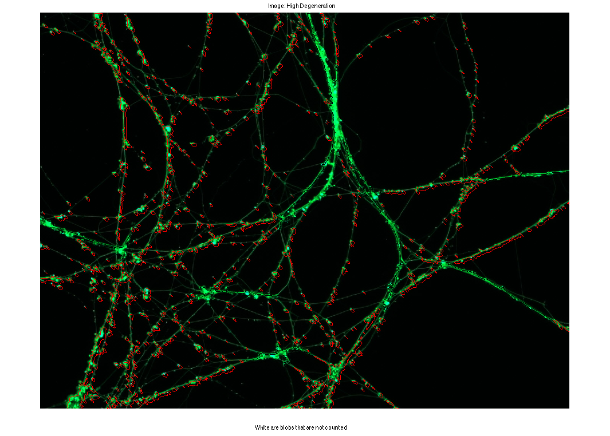
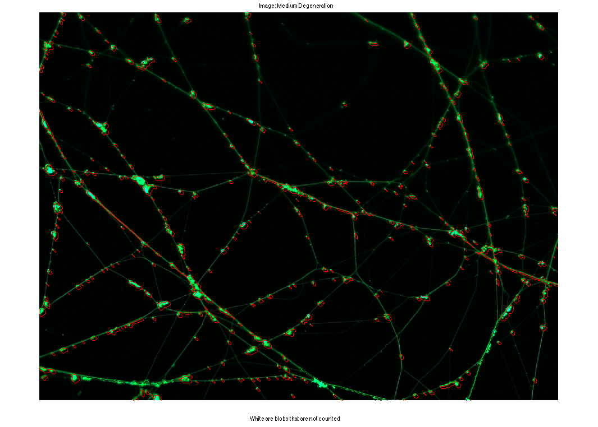
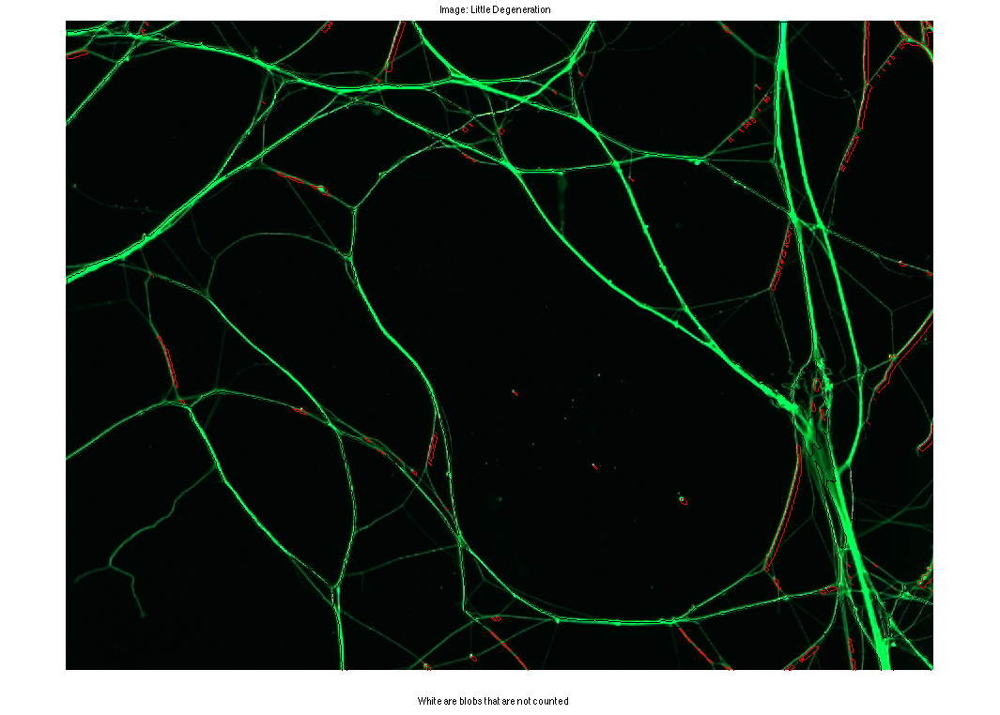
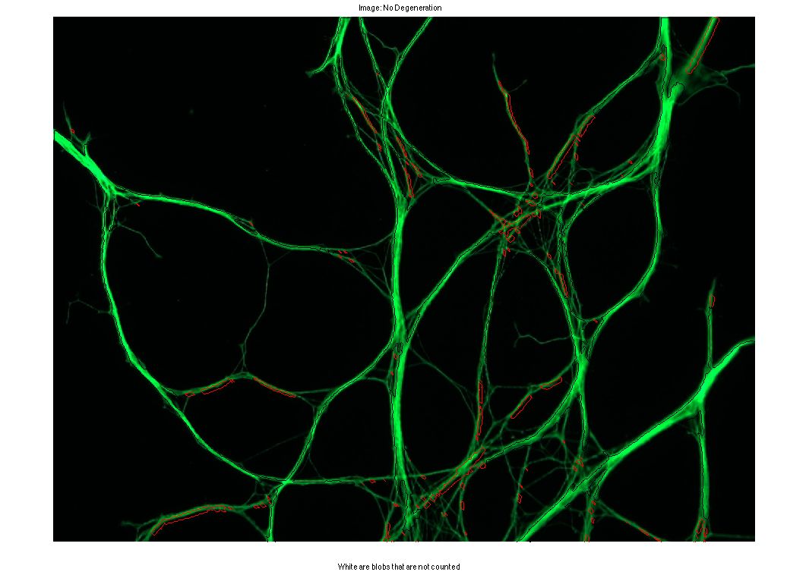

Homework 2
Ashutosh Priyadarshy Digital Image Processing Spring 2012
Contents
Introduction
This algorithm seems to work better with the higher degeneration images because the radius of each blob is significnatly larger than the width of an axon it sits on. This can be improved by throwing out objects that are clearly too long or too wide, like when it captures axons instead of blobs. Also this algorithm tends to think there are blobs where multiple axons intersect becuase of the circular roundabout created at the intersection of the axons. The following is just code to display the results, the images were processed in a seperate file and saved so that they can be loaded and displayed here.
close all; clear all; % Read in all the images. img0 = imread('no+degeneration.jpg'); img1 = imread('very+little+degeneration.jpg'); img2 = imread('medium+degeneration.jpg'); img3 = imread('70-80+percent+degeneration.jpg'); for image = 1:4 % Select a different image each run. if (image == 1) load res_high_degen.mat name = 'High Degeneration'; figure(1); imshow(img3); elseif (image == 2) load res_med_degen.mat name = 'Medium Degeneration'; figure(2); imshow(img2); elseif (image == 3) load res_little_degen.mat name = 'Little Degeneration'; figure(3); imshow(img1); elseif (image == 4) load res_no_degen.mat name = 'No Degeneration'; figure(4); imshow(img0); end cur_img = res(:, :, 1); sel = strel('square', 5); cur_img_erode = imerode(cur_img, sel); cur_img_erode = cur_img; [B, L] = bwboundaries(cur_img_erode, 'noholes'); area = 0; area_big = 0; counter = 0; area_acc = 0; counter = 0; hold on; for k = 1:length(B) boundary = B{k}; area = length(boundary); if(area < 400) plot(boundary(:,2), boundary(:,1), 'r', 'LineWidth', 1); area_acc = area_acc + area; counter = counter + 1; else plot(boundary(:,2), boundary(:,1), 'w', 'LineWidth', 1); area_big = area_big + area; end y = boundary(:, 2); x = boundary(:, 1); end hold off; title(['Image: ', name]); xlabel('White are blobs that are not counted'); blob_count_max = length(B); blob_count_min = counter; blob_count_estimate = counter + (area_big./(area_acc./counter)); disp(['For Image: ' name]); disp(['Blob counts:', ' max = ' num2str(length(B)), '; min = ', num2str(blob_count_min), '; Estimate = ', num2str(blob_count_estimate)]); sprintf('\n') end
For Image: High Degeneration Blob counts: max = 597; min = 590; Estimate = 760.7433 ans = For Image: Medium Degeneration Blob counts: max = 327; min = 324; Estimate = 363.2017 ans = For Image: Little Degeneration Blob counts: max = 112; min = 107; Estimate = 531.5788 ans = For Image: No Degeneration Blob counts: max = 116; min = 111; Estimate = 450.2629 ans =   